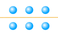
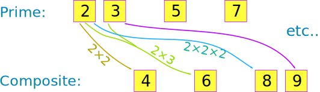

Prime Numbers and Composite Numbers
A Prime Number is:
a whole number above 1 that cannot be made by multiplying other whole numbers
Example: 5 is a prime number.
We cannot multiply other whole numbers like 2, 3 or 4 together to make 5
Example: 6 is not a prime number
6 can be made by 2×3 so is NOT a prime number, it is a composite number
Not 1
Years ago 1 was included as a Prime, but now it is not:
1 is not Prime and also not Composite.
Dividing Into Equal Groups
It is all about trying to divide the number into equal groups
Some whole numbers can be divided up exactly, and some can't!
Example: 6
6 can be divided exactly by 2, or by 3:
6 = 2 × 3
Like this:
|  | or | |
|
divided into 2 groups |
divided into 3 groups |
Example: 7
But 7 cannot be divided up exactly:
And we give them names:
- When a number can be divided up exactly it is a Composite Number
- When a number cannot be divided up exactly it is a Prime Number
So 6 is Composite, but 7 is Prime
Like this:

And that explains it ... but there are some more details ...
Not Into Fractions
We are only dealing with whole numbers here! We are not going to cut things into halves or quarters.
Not Into Groups of 1
OK, we could have divided 7 into seven 1s (or one 7) like this:
|
7 = 1 x 7 |
But we could do that for any whole number!
So we are only interested in dividing by whole numbers other than the number itself.
Example: is 7 a Prime Number or Composite Number?
- We cannot divide 7 exactly by 2 (we get 2 lots of 3, with one left over)
- We cannot divide 7 exactly by 3 (we get 3 lots of 2, with one left over)
- We cannot divide 7 exactly by 4, or 5, or 6.
We can only divide 7 into one group of 7 (or seven groups of 1):
|
7 = 1 x 7 |
So 7 is a Prime Number
And also:
It is a Composite Number when it can be divided exactly by a whole number other than itself.
Like this:
Example: is 6 a Prime Number or Composite Number?
6 can be divided exactly by 2, or by 3, as well as by 1 or 6:
6 = 1 × 6
6 = 2 × 3
So 6 is a Composite Number
Sometimes a number can be divided exactly in many ways:
Example: 12 can be divided exactly by 1, 2, 3, 4, 6 and 12:
1 × 12 = 12
2 × 6 = 12
3 × 4 = 12
So 12 is a Composite Number
And note this:
Any whole number greater than 1 is either Prime or Composite
Activity
Factors
We can also define a Prime Number using factors.

"Factors" are numbers we multiply
together
to get
another number.
And we have:
When the only two factors of a number are 1 and the number,
then it is a Prime Number
It means the same as our previous definition, just stated using factors.
And remember this is only about Whole Numbers (1, 2, 3, ... etc), not fractions or negative numbers. So don't say "I could multiply ½ times 6 to get 3", OK?
Examples:
| 3 = 1 × 3 (the only factors are 1 and 3) |
Prime |
| 6 = 1 × 6 6 = 2 × 3 (the factors are 1, 2, 3 and 6) |
Composite |
Examples From 1 to 14
Factors other than 1 or the number itself are highlighted:
|
Number |
Can be Exactly Divided By |
Prime, or Composite? |
|
1 |
(1 is not prime or composite) |
|
|
2 |
1, 2 |
Prime |
|
3 |
1, 3 |
Prime |
|
4 |
1, 2, 4 |
Composite |
|
5 |
1, 5 |
Prime |
|
6 |
1, 2, 3, 6 |
Composite |
|
7 |
1, 7 |
Prime |
|
8 |
1, 2, 4, 8 |
Composite |
|
9 |
1, 3, 9 |
Composite |
|
10 |
1, 2, 5, 10 |
Composite |
|
11 |
1, 11 |
Prime |
|
12 |
1, 2, 3, 4, 6, 12 |
Composite |
|
13 |
1, 13 |
Prime |
|
14 |
1, 2, 7, 14 |
Composite |
|
... |
... |
... |
So when there are more factors than 1 or the number itself, the number is Composite.
A question for you: is 15 Prime or Composite?
Why All the Fuss about Prime and Composite?
Because we can "break apart" Composite Numbers into Prime Number factors.
It is like the Prime Numbers are the basic building blocks of all numbers.
And the Composite Numbers are made up of Prime Numbers multiplied together.
Here we see it in action:
Example: 12 is made by multiplying the prime numbers 2, 2 and 3 together.
12 = 2 × 2 × 3
The number 2 was repeated, which is OK.
In fact we can write it like this using the exponent of 2:
12 = 22 × 3
And that is why they are called "Composite" Numbers because composite means "something made by combining things"
This idea is so important it is called The Fundamental Theorem of Arithmetic.
There are many puzzles in mathematics that can be solved more easily when we "break up" the Composite Numbers into their Prime Number factors.
And a lot of internet security is based on mathematics using prime numbers in a subject called cryptography.